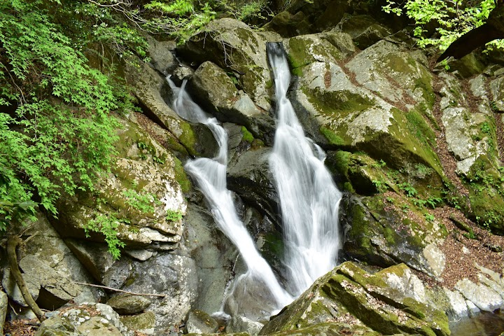
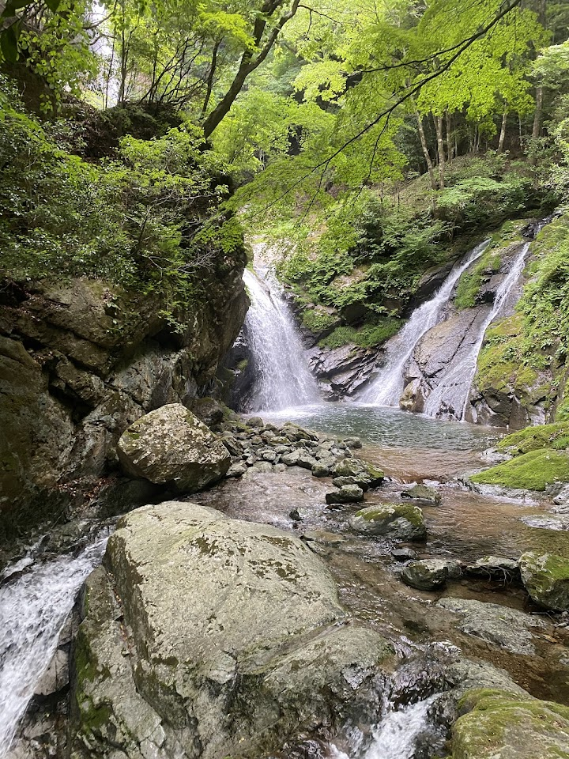
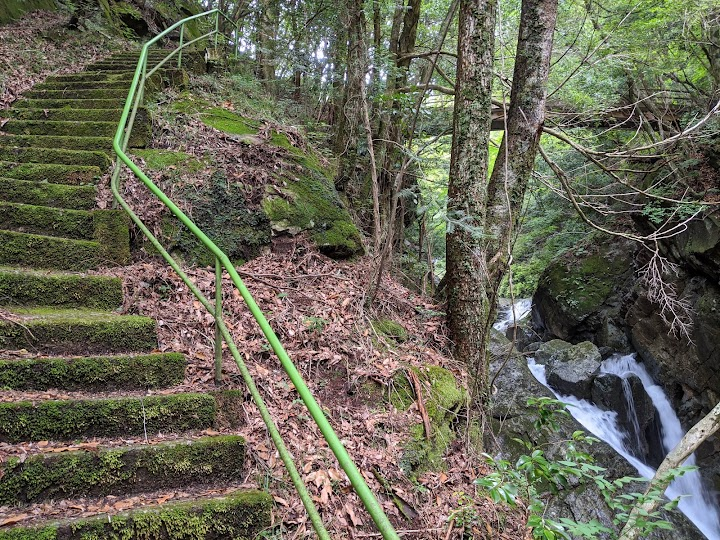
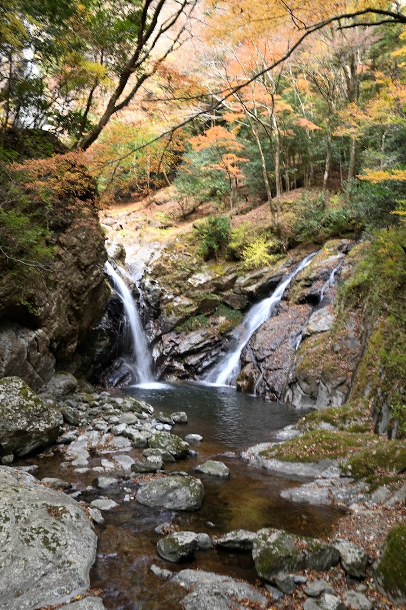
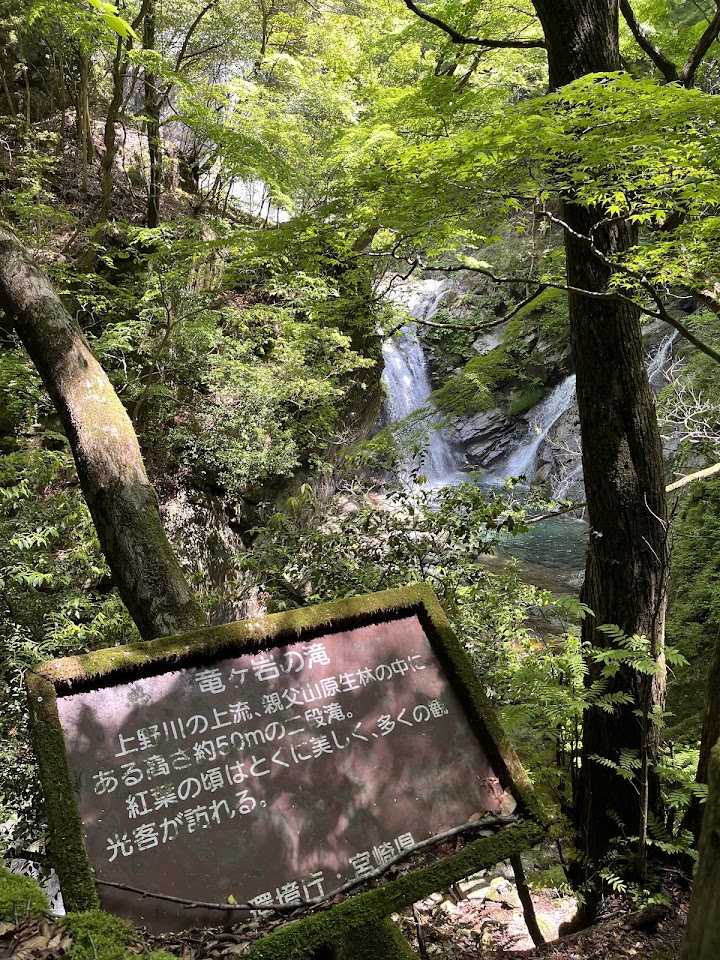

Ryūgaiwa Waterfall
A waterfall near Takachiho with very impressive falls. A visitor warns that you must park in the dedicated Ryugaiwa car park to reach it and not follow the map pin to the wrong spot.
Open in Google Maps (street view, more photos and reviews there)






Visitor tips on finding it and getting there
Incredible falls but you must park at Tatsugaiwanotaki Parking Lot to access don’t follow google maps to here!